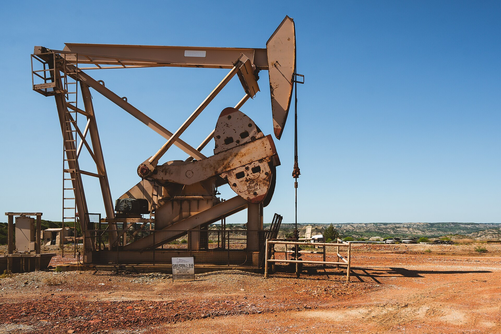

Как работает ОПЕК и как устанавливаются цены на нефть
ОПЕК — Организация стран — экспортёров нефти — была основана 14 сентября 1960 года в Багдаде пятью государствами (Иран, Ирак, Кувейт, Саудовская Аравия и Венесуэла); штаб-квартира с 1 сентября 1965 года находится в Вене. По состоянию на 2026 год в организации 11 государств-членов (ОАЭ вышли в 2026 году). Члены ОПЕК владеют примерно 79,5% доказанных мировых запасов нефти и около 38% добычи (2022). Организация влияет на рынок через квоты на добычу; с 2016 года координируется с такими странами, как Россия и Казахстан, в формате «ОПЕК+». По официальным источникам.

Цена нефти влияет на всё — от автомобильного топлива до цен на продукты — и формирует бюджеты стран-производителей. Важную роль в этой цене играет организация под названием ОПЕК. Ниже объясняется, что такое ОПЕК и как формируется цена на нефть — только факты.
Что такое ОПЕК и когда она основана
ОПЕК — это Организация стран — экспортёров нефти. Она была основана 14 сентября 1960 года на конференции в Багдаде, столице Ирака. Пять государств-основателей: Иран, Ирак, Кувейт, Саудовская Аравия и Венесуэла. Цель — координировать нефтяную политику членов и стабилизировать цены на рынке.
Штаб-квартира: из Женевы в Вену
Сначала Секретариат ОПЕК находился в Женеве, Швейцария. 1 сентября 1965 года организация перенесла штаб-квартиру в Вену, столицу Австрии, где работает по сей день. Конференция ОПЕК обычно собирается не реже двух раз в год.

Нынешние члены: 11 государств
По состоянию на 2026 год в ОПЕК 11 государств-членов: Алжир, Экваториальная Гвинея, Габон, Иран, Ирак, Кувейт, Ливия, Нигерия, Республика Конго, Саудовская Аравия и Венесуэла. За последние годы организацию покинули: Катар (1 января 2019), Эквадор (1 января 2020), Ангола (2024) и ОАЭ (2026).
Насколько велика ОПЕК
Члены ОПЕК владеют примерно 79,5% доказанных мировых запасов нефти; значительная их часть приходится на Ближний Восток. Доля группы в мировой добыче нефти составляла около 38% в 2022 году. Именно этот вес делает решения ОПЕК значимыми для мирового рынка.
Влияние через квоты
ОПЕК не устанавливает цену напрямую; её главный инструмент — установление суточных объёмов добычи (квот) для членов. Если группа сокращает добычу, на рынок поступает меньше нефти и цена обычно растёт; если увеличивает — предложение растёт, а на цену давит понижательное давление. Это закон спроса и предложения в действии.
ОПЕК+ (с 2016 года)
В конце 2016 года члены ОПЕК начали сотрудничать с крупными производителями нефти вне организации — этот формат называют «ОПЕК+». В ОПЕК+ входят, в частности, Россия, Казахстан, Азербайджан, Бахрейн, Бруней, Малайзия, Мексика, Оман, Судан и Южный Судан. Формат позволяет координировать добычу в более широком масштабе.
Brent и WTI: где устанавливается цена
Мировая цена нефти формируется на биржах, по спросу и предложению, и обычно измеряется по двум основным эталонам: Brent (нефть Северного моря) для Европы и WTI (West Texas Intermediate) для США. Решения ОПЕК, рост мировой экономики, уровень запасов и геополитические события вместе влияют на эти эталонные цены.
Почему это важно для Узбекистана и диаспоры
Узбекистан не член ОПЕК, но цена нефти влияет на него прямо и косвенно: цены на топливо, состояние мировой экономики и экономики России и Казахстана — где работают многие узбекские трудовые мигранты — зависящие от нефтяных доходов. Казахстан участвует в формате ОПЕК+. Поэтому решения ОПЕК доходят до бюджетов семей за тысячи километров.